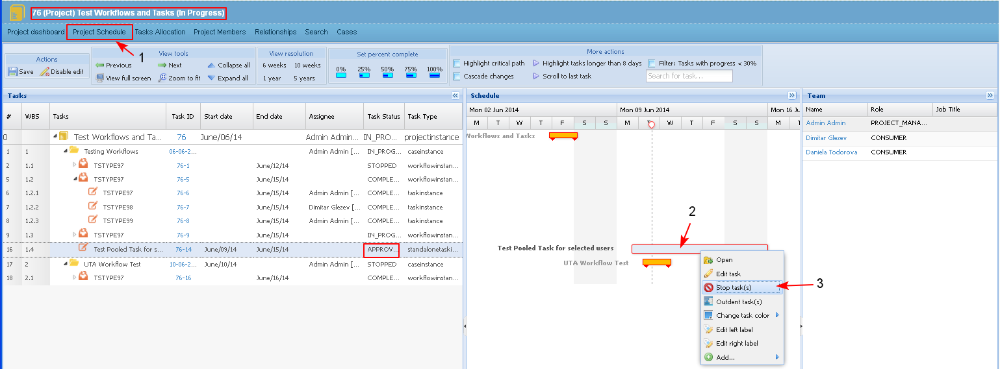
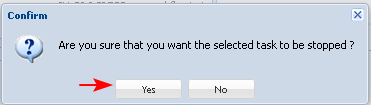
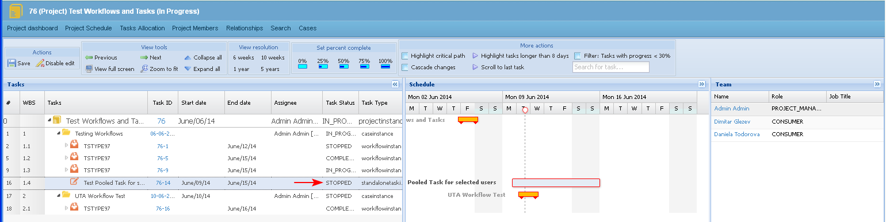

The user is able to stop tasks in the Project Schedule.
The approved tasks, tasks in progress and tasks on-hold could not be deleted from the projects schedule, that is why they can only be stopped (cancelled) when the Project Manager decides that they are no longer valid.
Preconditions
- The action is active only for tasks in status "Approved", "In Process" and "On-Hold".
- Only the PM, team leads, or creator can stop a task.
- The user opens the Project Schedule (1) of a project, clicks on a task with the right button of the mouse and selects the action "Stop task(s)" from the drop down menu (2-3).

- The system displays a confirmation message. The user clicks "Yes".

- The task remains in the project schedule. The status of the task changes to "Stopped".
